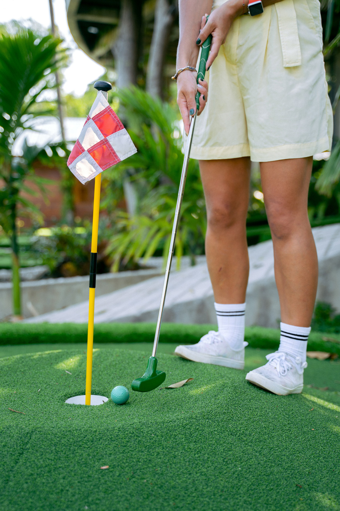
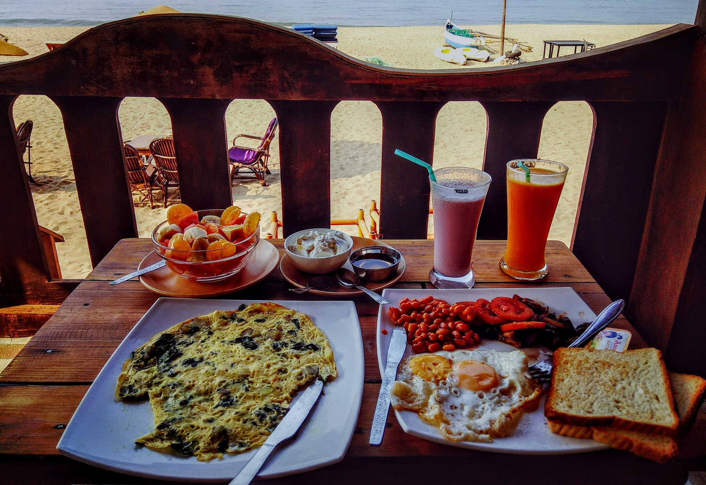
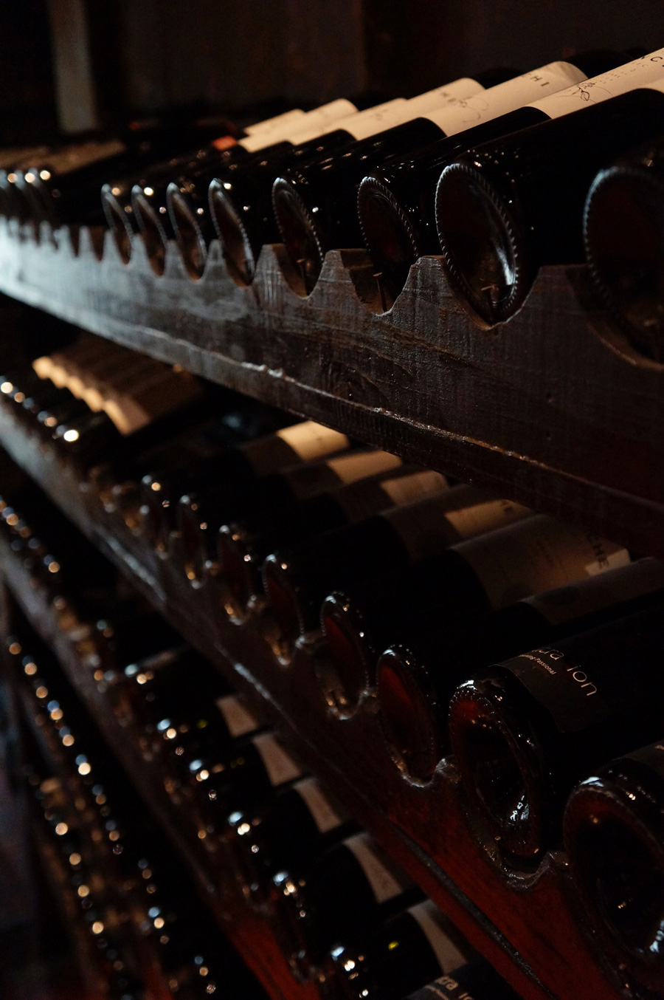
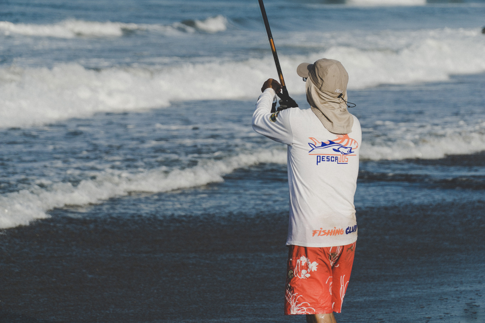
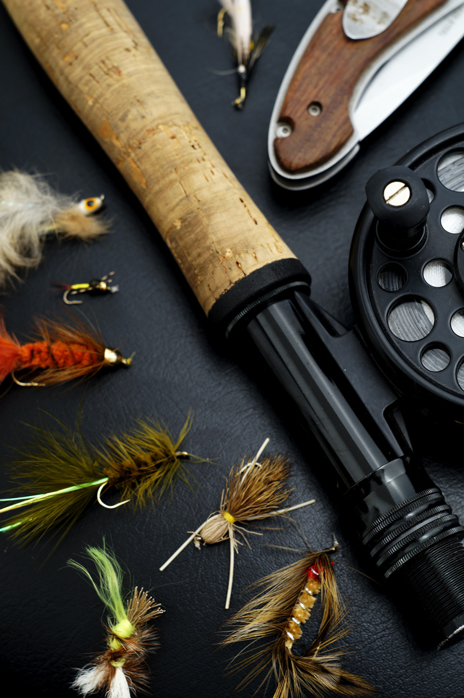
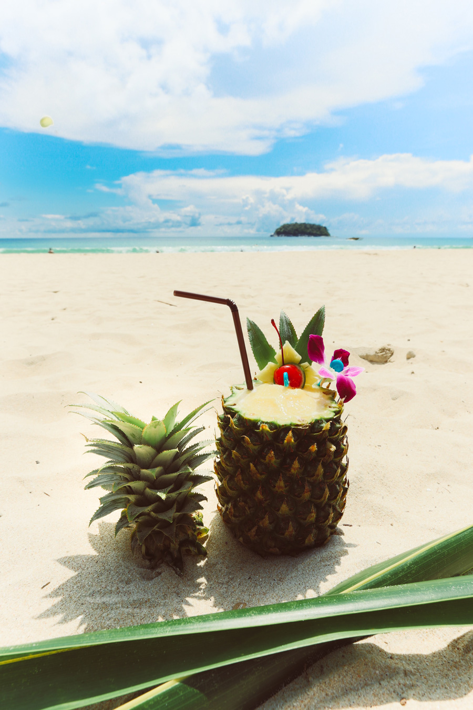
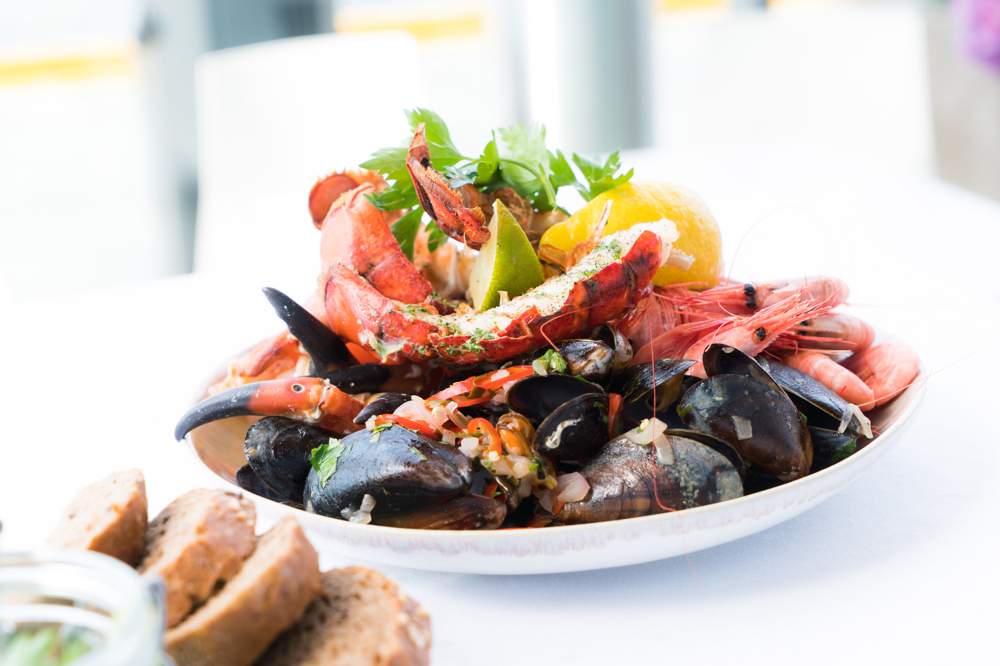
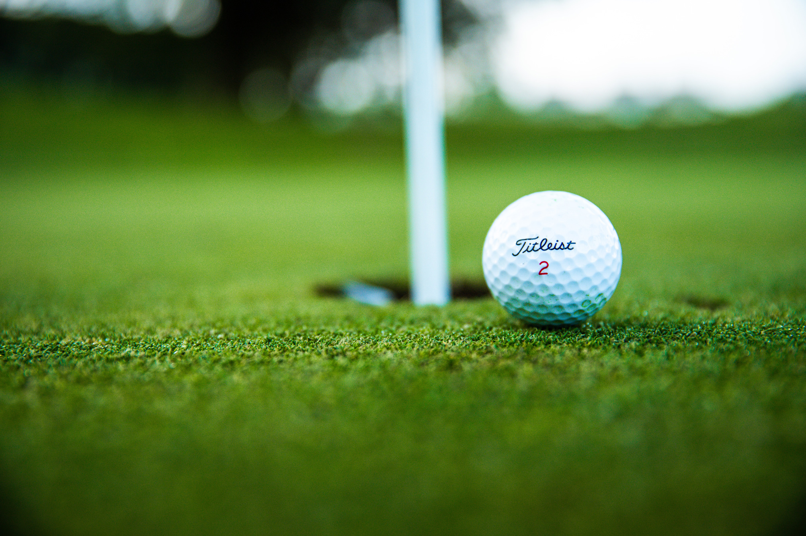

Best places to go putt putt golfing

Find fresh breakfast foods

Find fine wineriesRelax at our nicest spas

Find the best on beach fishing locations

Fishing rentals

Refreshing beverage locations

Top dinner recommendations

Best locations to go golfing